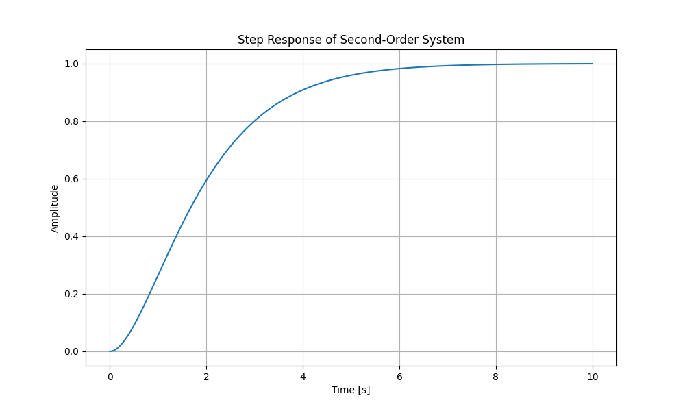
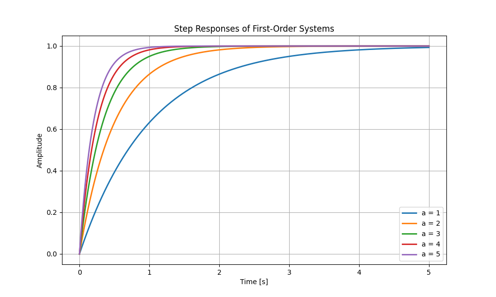

🐍 Control System Design with Python¶
Introduction to Python for Control Systems¶
Python is a versatile programming language widely used in scientific computing and engineering. With libraries like NumPy, Control, and Matplotlib, it provides powerful tools for control system analysis and design.
This tutorial will guide you through: - Basic Python concepts for control systems - Symbolic mathematics with SymPy - Transfer function analysis - System response visualization
💡 All code examples can be found in the following files: - basic_examples.py - symbolic_example.py - control_examples.py
🔧 Basic Python Concepts¶
Variables in Python are dynamically typed and easy to work with:
Output:Engineers often work with signals (arrays), which are handled efficiently using NumPy:
Output:Arrays can be created from individual variables:
Output:NumPy provides convenient functions for creating arrays:
x = np.zeros(4) # Array of zeros
y = np.ones((2, 2)) # 2x2 matrix of ones
z = np.linspace(0, 1, 5) # 5 evenly spaced points from 0 to 1
🔄 Control Flow and Functions¶
Python's clean syntax makes control flow and functions intuitive:
Output:➗ Symbolic Mathematics with SymPy¶
SymPy enables symbolic mathematics, which is crucial for control system analysis. For example, we can solve the quadratic equation:
\(ax^2 + bx + c = 0\)
Or simplify trigonometric identities like:
\(\sin^2(x) + \cos^2(x) = 1\)
Here's how to do it in code:
from sympy import symbols, solve, simplify, cos, sin
# Define symbolic variables
x, y = symbols('x y')
# Work with polynomials
pol = x**2 + 2*x + 1 # Represents (x + 1)²
coeffs = pol.as_poly().all_coeffs()
# Solve equations
solution = solve(pol, x)
# Simplify expressions
result = simplify(cos(x)**2 + sin(x)**2)
--- Symbolic Mathematics Examples ---
Defined symbols: x y
Polynomial: x**2 + 2*x + 1
Coefficients: [1, 2, 1]
Solutions to x**2 + 2*x + 1 = 0:
[-1]
Simplifying sin(x)**2 + cos(x)**2
Result: 1
🎛️ Control Systems with Python Control¶
The control library lets us work with transfer functions and analyze system responses. For example, consider a second-order system:
\(G(s) = \frac{1}{s^2 + 2s + 1}\)
import control
import numpy as np
import matplotlib.pyplot as plt
# Create transfer function
num = [1]
den = [1, 2, 1]
G = control.TransferFunction(num, den)
# Get system information
zeros, poles, gain = control.zero_pole_gain(G)
# Plot step response
t = np.linspace(0, 10, 1000)
t, y = control.step_response(G, t)
plt.plot(t, y)
plt.grid(True)
plt.xlabel('Time [s]')
plt.ylabel('Amplitude')
plt.title('Step Response')
plt.show()
The resulting step response plot:

📊 First-Order System Comparison¶
Let's compare first-order systems with different time constants. The transfer function form is:
\(G(s) = \frac{a}{s + a}\)
where \(a\) is the inverse of the time constant \(\tau = \frac{1}{a}\).
import numpy as np
import matplotlib.pyplot as plt
from control import TransferFunction, step_response
plt.figure(figsize=(10, 6))
t = np.linspace(0, 5, 1000)
for a in range(1, 6):
G = TransferFunction([a], [1, a])
t, y = step_response(G, t)
plt.plot(t, y, linewidth=2, label=f'a = {a}')
plt.grid(True)
plt.xlabel('Time [s]')
plt.ylabel('Amplitude')
plt.title('Step Responses of First-Order Systems')
plt.legend()
plt.show()
The resulting comparison plot:

This tutorial demonstrates how Python can be used effectively for control system analysis and design. The combination of NumPy for numerical computations, Control for system analysis, and Matplotlib for visualization makes Python a powerful tool for control engineering.
📚 Further Reading: - Python Control Systems Library Documentation - NumPy Documentation - SymPy Tutorial